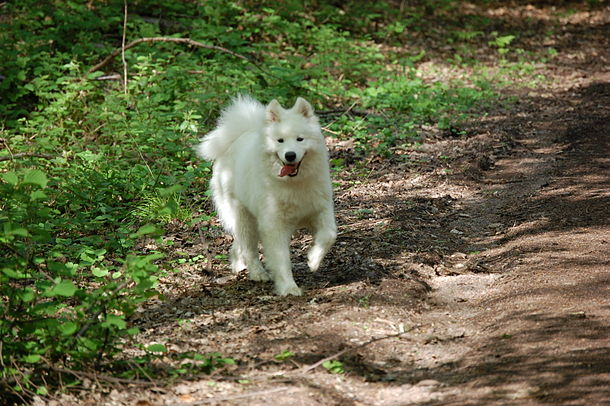

Samoyed là một giống chó săn có nguồn gốc từ vùng Siberia, đây là giống chó có bộ lông trắng tinh như tuyết cùng tính cách mang nhiều đặc điểm của chó sói là những đặc trưng nổi bật của giống chó này. Samoyed có nghĩa là giống chó có khả năng tự tìm ra thức ăn. Samoyed từng là chó kéo xe trượt tuyết trước khi trở thành bạn dành cho giới thượng lưu và hợp thời trang như ngày nay, nó cũng từng được những người thợ săn và đánh cá nuôi. Trang nhã và lanh lợi, giống chó này ngày nay trở nên một trong những giống chó mốt nhất của những người yêu chó và được gọi là Nàng Bạch tuyết của rừng Taiga.
Đây là một giống chó rất siêng năng. Nó có thể sủa bất cứ lúc nào khi có vật tiếp cận nó.[2] Chúng là giống chó có giá thành cao. Giá cả của loài chó này phụ thuộc nhiều vào ngoại hình, tính cách của chúng. Có khi người ta có thể tìm được những chú chó giá 1.000 USD, nhưng cũng có lúc phải trả gấp 11 lần con số này để sở hữu một con. Giống chó còn này rất thân thiện và nổi tiếng ham chơi

Chúng có thân hình gọn gàng, mạnh mẽ cho thấy sức mạnh của chúng khi gặp. Chúng có cái đầu khoẻ, mõm nhọn, mũi màu đen hoặc nâu và bộ hàm rất khoẻ. Chúng có chiều cao từ 21 đến 23 inches (53 – 60 cm). Chó đực cao từ 19 – 21 inches (48–53 cm). Cân nặng của chúng là 45 đến 65 pounds (20 – 30 kg). Chó cái có cân năng từ 35 – 50 pounds (16 – 20 kg). Chúng sống khoảng 12 - 15 năm. Chúng có thể mắc các bệnh về bệnh về máu và tiểu đường và có nguy cơ bị dị ứng da.
Bộ lông chúng dày và bóng mượt có màu vàng, trắng, kem và hơi hung vàng, tuy vậy màu trắng vẫn được ưa chuộng nhất. Mắt màu sẫm, xếch và sâu. Tai có kích thước vừa phải, hơi tròn ở đỉnh và luôn dựng đứng. Đuôi dài, xù lông và luôn cuộn tròn dựng đứng ở trên lưng. Chân thẳng, gân guốc. Bàn chân phẳng và phủ đầy lông. Bộ lông rất dày và cứng hơi gợn sóng. Dưới lớp lông này là lớp lông mềm dày dặn, giúp chúng chống chọi với cái lạnh của vùng ôn đới. Chúng cần chăm sóc bộ lông vì rụng lông rất nhiều, theo mùa. Bộ lông có khả năng tự làm trắng không cần tắm rửa.

Thích nghi tốt với cuộc giống gia đình và luôn yêu mến trẻ. Giống chó này thường được huấn luyện để làm việc trong một nhóm. Chúng không chủ động tìm kiếm kẻ thù, tuy vậy sẵn sàng phòng thủ khi cần thiết. Không nên để cho chúng chơi một mình với các súc vật nhỏ khác, tuy vậy sẽ rất có ích khi cho chúng hoà đồng sớm với các loài khác từ lúc còn nhỏ. Chúng còn có đặc điểm là rất thích sủa.
Chúng có thể sống trong điều kiện căn hộ nếu có không gian dành cho nó tập luyện. Chúng rất hoạt động trong nhà và thoải mái nhất khi ở không gian rộng như là sân vườn. Bộ lông dày không cho phép chúng sống ở những nơi có thời tiết nóng quá. Về hoạt động, chúng ần có các bài tập vừa phải nhưng trong thời tiết nóng cần hạn chế vì bộ lông dày.